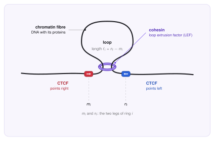
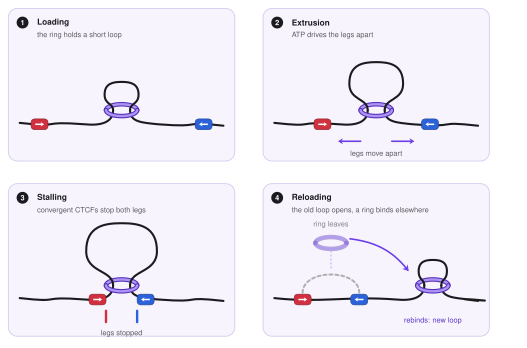
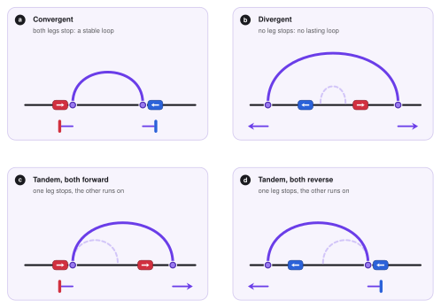
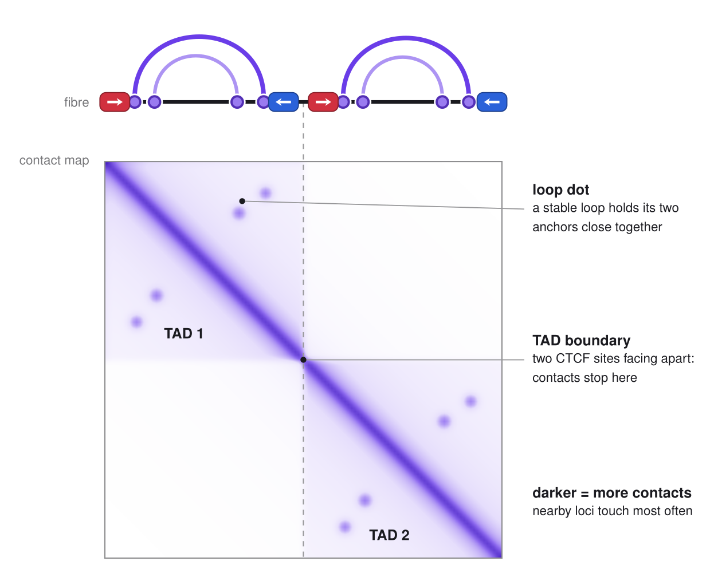
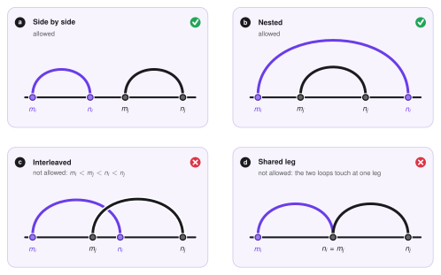
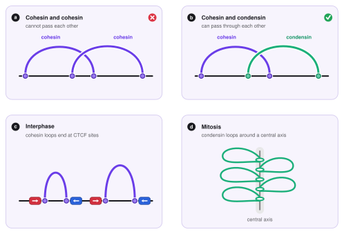
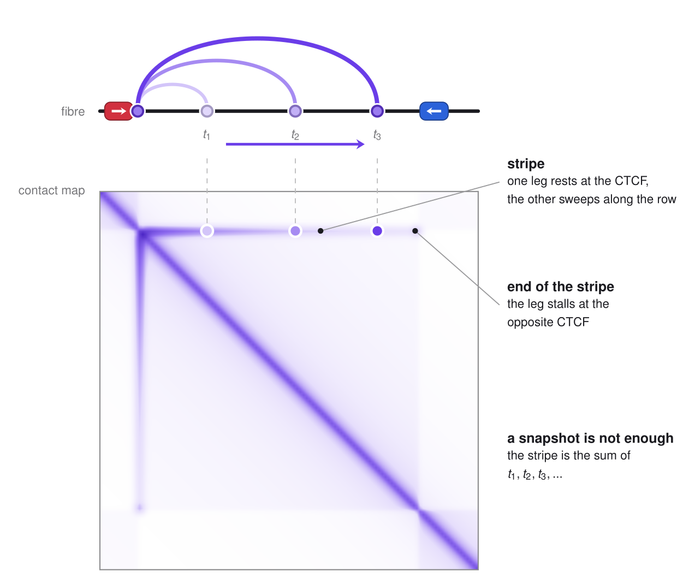

Loop extrusion¶
This page explains loop extrusion, the process that folds chromatin into loops. It is about the biology and the basic ideas only. The energy function and the sampling algorithm of LoopSage come in the next sections. The boxes called In LoopSage just point to the settings where each idea appears in the program.
The big picture¶
A human cell has about two metres of DNA that must fit into a nucleus a few micrometres wide. The DNA is therefore folded, and the folding is not random: places that are far apart along the DNA are often brought next to each other, and this controls which genes talk to which regulatory elements. One of the main folding mechanisms is loop extrusion. Imagine a ring that is threaded onto a rope and starts to slide along it while pulling the rope through itself: a loop of rope grows on one side of the ring. In the cell the ring is a protein complex, and the rope is the chromatin fibre.
The players¶
The chromatin fibre is the DNA together with the proteins it is wrapped around. Over distances of thousands of bases it behaves like a long flexible rope. In all figures it is the black line.
Cohesin is a ring-shaped protein complex that works as a molecular motor. It holds the fibre at two points, and using the energy of ATP it moves these two points apart, pulling more and more fibre through itself. We call such a motor a loop extrusion factor, or LEF. In the figures cohesin is the purple ring.
CTCF is a protein that sticks to the DNA at places with a specific sequence, the CTCF motif. The motif has a direction, like a one-way arrow written along the DNA: it can point right (red) or left (blue). CTCF acts as a boundary element: a place where cohesin tends to stop.
Condensin is a cohesin relative that works when the cell divides. It is also a ring that extrudes loops, and in the figures it is green. We meet it at the end of this page.

The loop extrusion model¶
The loop extrusion model (Sanborn et al. 2015, Fudenberg et al. 2016) proposes that a loop is not made by two faraway places that happen to meet. Instead, a cohesin ring sits on the fibre and reels it in from both sides, so the loop keeps growing until the ring is stopped by something.

How we describe a loop¶
First we cut the studied region into small equal pieces, called beads (for example 5 000 bases each), and number them \(1, 2, \dots, N_{\mathrm{beads}}\). A bead is simply a position on the fibre, and we write \(k\) for a general bead number.
There are usually many rings on the region at once, \(N_{\mathrm{lef}}\) of them, and we give every ring its own index \(i = 1, 2, \dots, N_{\mathrm{lef}}\). A ring has two legs, so ring \(i\) is described by two bead numbers,
where \(m_i\) is the position of its left leg and \(n_i\) the position of its right leg. The loop of ring \(i\) is everything between its legs, so its size in beads is
The whole system at one moment is then just the list of all pairs,
which is \(N_{\mathrm{lef}}\) pairs of numbers. This short list is all that the stochastic model of the next sections has to keep track of, and a change of the system is a change of one of these numbers.
| Symbol | Meaning |
|---|---|
| \(N_{\mathrm{beads}}\) | number of beads (genomic bins) in the modelled region |
| \(k\) | index of a bead, \(k = 1,\dots,N_{\mathrm{beads}}\) |
| \(N_{\mathrm{lef}}\) | number of loop extrusion factors (rings) on the region |
| \(i,\ j\) | index of a ring, \(i,j = 1,\dots,N_{\mathrm{lef}}\) |
| \(m_i,\ n_i\) | left and right leg of ring \(i\) (bead numbers, \(m_i<n_i\)) |
| \(\ell_i = n_i - m_i\) | size of the loop of ring \(i\), in beads |
| \(L(k),\ R(k)\) | how strongly a CTCF site at bead \(k\) stops a left leg, respectively a right leg (introduced below) |
What a LEF does¶
The ring is always on the fibre, and its life is a short cycle.
- It holds a small loop. A freshly placed ring holds a very short piece of fibre, a loop of one or two beads.
- It extrudes. The legs slide along the fibre: the left leg moves left (\(m \to m-1\)) and the right leg moves right (\(n \to n+1\)). The loop grows. In experiments this happens at about one thousand bases per second (Davidson et al. 2019; Kim et al. 2019).
- It stops when a leg meets a barrier: a CTCF with the right orientation, or another ring. The other leg may still move.
- It unloads and rebinds. After some time the ring leaves the fibre, the loop is released, and a ring binds again somewhere else. In a living cell the number of rings on the fibre stays roughly constant, so we can think that every ring that leaves is replaced at once.
The fuel is ATP, the energy currency of the cell. Each step of the ring uses a little ATP, and without it no loops are made (Ganji et al. 2018; Davidson et al. 2019). We do not follow this chemistry in detail. We only keep its result: legs that keep moving outward.
In LoopSage
The number of rings \(N_{\mathrm{lef}}\) is n_lef, and the number of beads \(N_{\mathrm{beads}}\) is n_beads.
A Monte Carlo step either slides the legs of one ring or lets the ring unbind and rebind at a new place, so all n_lef rings are always on the fibre.
By default the new place is random; lef_track_file (cohesin ChIP-seq signal) makes some places more likely.
What the model assumes¶
The picture above rests on a few simple assumptions.
- More extrusion than sinking. On average the legs move outward, so loops grow rather than shrink. In the simplest version a leg only moves outward. In a more general version a leg does a random walk with a drift, so it can also step back sometimes.
- Motion is one-dimensional. A leg moves only along the fibre, like a bead on a string. Three-dimensional space matters later, when the loops are folded into a 3D structure.
- Rings do not cross. Two cohesin rings cannot pass through each other (see below).
- CTCF is a one-way barrier. It only stops a leg that comes from the correct side (see below).
- Rings live longer at barriers. A ring that is stopped by a CTCF pair is protected from being removed, so it stays much longer than a ring that is just sliding. This is why the loops anchored at CTCF are the ones that dominate experimental data. Typically CTCF stays on DNA for minutes and cohesin for tens of minutes (Hansen et al. 2017).
- The data are averages. An experiment measures millions of cells at once, each with its own loops. The model therefore describes a population of possible loop arrangements, not one fixed picture.
In LoopSage
lef_rw = true means that legs do a random walk; false means that they only extrude outward.
lef_speed lets different rings move at different speeds.
How CTCF stops cohesin¶
CTCF stops cohesin in one direction only. A forward CTCF (red) stops a leg that is moving left, head-on towards the arrow tip, and a reverse CTCF (blue) stops a leg that is moving right. So the two CTCFs at the ends of a loop must face each other (this is called convergent) to stop both legs.

This is exactly what is seen in data: loops with CTCF at both ends are mostly convergent (Rao et al. 2014; de Wit et al. 2015; Guo et al. 2015). If the two sites point in the same direction, one leg is free and keeps extruding, which makes a line of enriched contacts called a stripe. If they face away from each other, no loop is kept.
To use this in a model we only need to say, for every bead \(k\), how strongly it stops a left leg, \(L(k)\), and how strongly it stops a right leg, \(R(k)\). Beads that are not CTCF sites have \(L(k)=R(k)=0\). The direction of each site is read from the DNA sequence of its motif.
In LoopSage
The anchors in the input BEDPE file become the profiles \(L(k)\) and \(R(k)\).
If the file has orientation columns (8 and 9) they are used directly; otherwise motif_genome switches on the CTCF motif search (motif_pfm, motif_pvalue) that finds the orientation of every anchor.
With data_loss_mode = 1 the barriers are given as a 2D map of loops \((m,n)\) instead of two 1D profiles.
Loops, TADs and contact maps¶
Hi-C is an experiment that counts how often two places of the genome touch each other. The result is a contact map: a square picture in which the pixel \((i,j)\) is darker when places \(i\) and \(j\) touch more often. Loop extrusion leaves two clear marks on it.
- Loop dots. The two ends of a stable loop are held together, so they touch more often than expected and make a dark dot, usually at the corner of a square.
- TADs (topologically associating domains; Dixon et al. 2012, Nora et al. 2012). These are squares along the diagonal. Inside a TAD, rings keep reeling in the whole region, so every place touches every other one. Across a TAD boundary contacts are rare. A boundary is often a pair of CTCFs facing away from each other, because neither lets rings from the other side come through.

Experiments agree with this picture: when cohesin is removed, loops and TADs disappear, and when CTCF is removed, domains lose their sharp edges (Rao et al. 2017; Nora et al. 2017). Cohesin makes the loops, and CTCF decides where they stop.
Rings do not cross¶
The fibre passes through the ring, so two rings on the same fibre cannot pass through one another. For two different rings \(i\) and \(j\), with loops \((m_i,n_i)\) and \((m_j,n_j)\), this means that they can lie side by side or one inside the other, but they cannot be interleaved, and they cannot share a leg.

As a result, rings push against each other and cannot all collapse into the same loop. They form a chain of neighbouring and nested loops, and the outer legs stay pressed against the next barrier.
In LoopSage
The interleaved case can be switched on or off with cross_loop, and the strictness is set by cross_coeff.
Condensin and mitosis¶
When a cell divides, each chromosome must become a compact rod that can be moved safely into a daughter cell. For this the cell uses condensin (two forms, I and II). Like cohesin, condensin is an ATP-driven ring that extrudes loops (Ganji et al. 2018), but with three differences.
- Longer loops. Condensin makes loops of roughly a hundred thousand to a few hundred thousand bases, arranged in nested arrays along the chromosome (Goloborodko et al. 2016; Gibcus et al. 2018).
- No CTCF stops. In mitosis CTCF and most cohesin leave the chromosome arms. The condensin loops are not anchored at fixed motifs and form a dense bottle-brush around a central axis. TADs and CTCF loops disappear from the contact map.
- They can pass cohesin. Single-molecule experiments show that condensin rings can pass through each other and through other ring complexes (Kim et al. 2020). A cohesin loop and a condensin loop can therefore be interleaved.

In LoopSage
A second group of extruders is added with n_lef2, next to the first group n_lef.
Setting between_families_penalty = false lets the two groups pass through each other, while rings of the same group still cannot.
Stripes and the need for dynamics¶
Not every pattern of a Hi-C map is a static picture of one loop. Many maps show stripes: thin lines that start at a CTCF site on the diagonal and run along a row (and, because the map is symmetric, along a column) for tens or hundreds of kilobases. A stripe means that one locus, the stripe anchor, touches many different loci in a row, one after the other.
Loop extrusion explains this naturally, if we allow the extrusion to be one-sided (Vian et al. 2018; Barrington et al. 2019). A ring is loaded close to a CTCF site that stops one of its legs. The other leg keeps running, so the loop grows step by step: at time \(t_1\) the loop is short, at \(t_2\) it is longer, at \(t_3\) longer still, until the moving leg is stopped by the opposite CTCF or the ring falls off. At each moment the ring holds one contact, \((m_i, n_i)\) with \(m_i\) fixed and \(n_i\) growing. A Hi-C experiment averages over millions of cells and over time, so these contacts add up to a line:

This is an important point for the rest of the documentation. A stable, two-sided loop gives a dot, and a dot can be explained by a single static picture. A stripe cannot: the contact \((m, n)\) changes while the leg moves, and the stripe is the record of this motion. The same holds for the fuzzy "flames" that start at a loop dot, for domains whose inside is enriched, and for the way the strength of a loop depends on how long rings live on the fibre. These features only make sense when we know how long a ring stays, how fast it moves and how often it is stopped.
In short, a complete explanation of a Hi-C map needs dynamics, not only the positions of the barriers. This is exactly what drove us to build LoopSage: a model in which many rings load, extrude, stall and unload on the fibre, so that the contact map is obtained as an average over a simulated trajectory, and the same trajectory can be turned into 3D structures.
In LoopSage
Every leg \(m_i\), \(n_i\) is moved by its own Monte Carlo step: it slides as a random walk or only outwards (lef_rw), with a speed set by lef_speed.
A leg that sits on a CTCF site is held there, so one-sided extrusion appears by itself when only one leg is at an anchor.
Stripes are never drawn by hand in the Hi-C-like map; they come from the simulated trajectory.
See the config reference.
Summary¶
- A LEF (cohesin) sits on the fibre and reels it in from both sides. Ring \(i\) is just a pair of legs \((m_i,n_i)\), its loop has size \(\ell_i=n_i-m_i\), and the whole system is the list of the \(N_{\mathrm{lef}}\) pairs.
- CTCF is a one-way barrier: facing sites stop both legs and make stable loops, sites in the same direction make stripes.
- Stripes are the record of a leg that moves while the other rests: they need dynamics, not a single snapshot.
- TADs and loop dots in Hi-C maps are the average footprint of many rings stopped at CTCF boundaries.
- Cohesin rings do not cross each other, but condensin, which builds the long nested loops of mitotic chromosomes, can pass through cohesin.
References¶
- Vian L. et al. (2018). The energetics and physiological impact of cohesin extrusion. Cell 173, 1165.
- Barrington C. et al. (2019). Enhancer accessibility and CTCF occupancy underlie asymmetric TAD architecture and cell type specific genome topology. Nature Communications 10, 2908.
- Sanborn A. L. et al. (2015). Chromatin extrusion explains key features of loop and domain formation in wild-type and engineered genomes. PNAS 112, E6456.
- Fudenberg G. et al. (2016). Formation of chromosomal domains by loop extrusion. Cell Reports 15, 2038.
- Goloborodko A., Imakaev M. V., Marko J. F., Mirny L. (2016). Compaction and segregation of sister chromatids via active loop extrusion. eLife 5, e14864.
- Rao S. S. P. et al. (2014). A 3D map of the human genome at kilobase resolution reveals principles of chromatin looping. Cell 159, 1665.
- de Wit E. et al. (2015). CTCF binding polarity determines chromatin looping. Molecular Cell 60, 676.
- Guo Y. et al. (2015). CRISPR inversion of CTCF sites alters genome topology and enhancer/promoter function. Cell 162, 900.
- Dixon J. R. et al. (2012). Topological domains in mammalian genomes identified by analysis of chromatin interactions. Nature 485, 376.
- Nora E. P. et al. (2012). Spatial partitioning of the regulatory landscape of the X-inactivation centre. Nature 485, 381.
- Rao S. S. P. et al. (2017). Cohesin loss eliminates all loop domains. Cell 171, 305.
- Nora E. P. et al. (2017). Targeted degradation of CTCF decouples local insulation of chromosome domains from genomic compartmentalization. Cell 169, 930.
- Hansen A. S. et al. (2017). CTCF and cohesin regulate chromatin loop stability with distinct dynamics. eLife 6, e25776.
- Ganji M. et al. (2018). Real-time imaging of DNA loop extrusion by condensin. Science 360, 102.
- Davidson I. F. et al. (2019). DNA loop extrusion by human cohesin. Science 366, 1338.
- Kim Y. et al. (2019). Human cohesin compacts DNA by loop extrusion. Science 366, 1345.
- Kim E. et al. (2020). DNA-loop extruding condensin complexes can traverse one another. Nature 579, 438.
- Gibcus J. H. et al. (2018). A pathway for mitotic chromosome formation. Science 359, eaao6135.